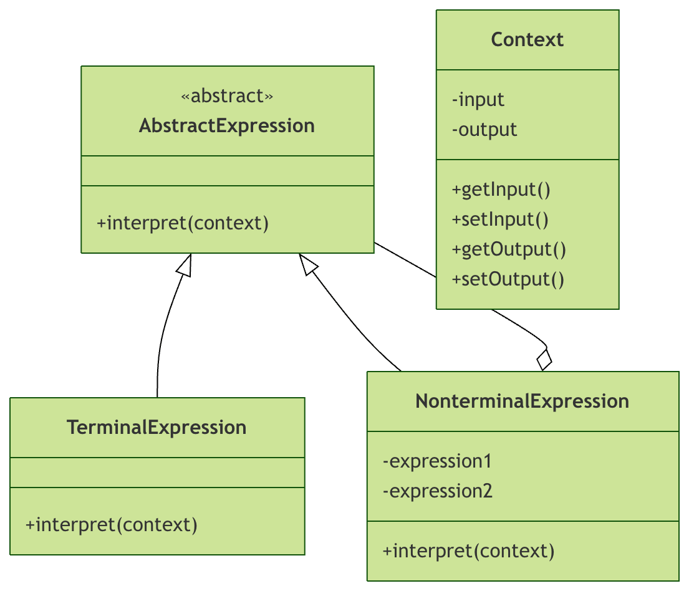

Patrón Intérprete en Python
El patrón intérprete (Interpreter Pattern) es un patrón de diseño de comportamiento que define la gramática de un lenguaje y establece un intérprete para interpretar las sentencias de dicho lenguaje. En términos simples, es como un pequeño compilador que puede analizar y ejecutar expresiones con reglas sintácticas específicas.
Idea central
Imagina el escenario de una calculadora: cuando ingresas"2 + 3 * 4"una expresión así, la calculadora necesita comprender el significado de esa cadena y calcular según las reglas de las operaciones matemáticas. El patrón intérprete es el diseño que implementa este proceso de «comprensión» y «ejecución».
Escenarios de aplicación
El patrón intérprete es especialmente adecuado para los siguientes casos:
- Cuando se necesita interpretar y ejecutar un lenguaje o expresión
- Cuando la sintaxis es relativamente simple y no demasiado compleja
- Cuando la eficiencia de ejecución no es un factor clave
- Cuando se necesitan ampliar con frecuencia las reglas gramaticales del lenguaje
Estructura del patrón
Entendamos los componentes centrales del patrón intérprete mediante un diagrama de clases:

Descripción de componentes
AbstractExpression (expresión abstracta)
- Define la interfaz de las operaciones de interpretación
- Normalmente incluye
interpret()método
TerminalExpression (expresión terminal)
- Implementa las operaciones de interpretación relacionadas con los símbolos terminales de la gramática
- No se puede descomponer en expresiones más pequeñas
NonterminalExpression (expresión no terminal)
- Implementa las operaciones de interpretación relacionadas con los símbolos no terminales de la gramática
- Normalmente contiene referencias a otras expresiones
Context (contexto)
- Contiene información global que el intérprete necesita
- Almacena la entrada y los resultados de salida
Sintaxis básica e implementación
Clase de expresión abstracta
Ejemplo
class Expression(ABC):
"""Clase de expresión abstracta, define la interfaz de interpretación"""
@abstractmethod
def interpret(self, context):
"""Método de interpretación, implementado por subclases concretas"""
pass
Expresión terminal
Ejemplo
"""Expresión numérica - expresión terminal"""
def __init__(self, number):
self.number = number
def interpret(self, context):
# Devuelve directamente el valor numérico
return self.number
def __str__(self):
return f"Number({self.number})"
Expresión no terminal
Ejemplo
"""Expresión de suma - expresión no terminal"""
def __init__(self, left, right):
self.left = left # Expresión izquierda
self.right = right # Expresión derecha
def interpret(self, context):
# Interpreta las expresiones izquierda y derecha por separado, luego las suma
return self.left.interpret(context) + self.right.interpret(context)
def __str__(self):
return f"({self.left} + {self.right})"
class SubtractExpression(Expression):
"""Expresión de resta - expresión no terminal"""
def __init__(self, left, right):
self.left = left
self.right = right
def interpret(self, context):
return self.left.interpret(context) - self.right.interpret(context)
def __str__(self):
return f"({self.left} - {self.right})"
class MultiplyExpression(Expression):
"""Expresión de multiplicación - expresión no terminal"""
def __init__(self, left, right):
self.left = left
self.right = right
def interpret(self, context):
return self.left.interpret(context) * self.right.interpret(context)
def __str__(self):
return f"({self.left} * {self.right})"
Ejemplo completo: calculadora simple
Implementemos una calculadora simple completa para interpretar expresiones matemáticas:
Ejemplo
"""Contexto de la calculadora, almacena información relacionada con el cálculo"""
def __init__(self):
self.variables = {} # Almacena valores de variables
def set_variable(self, name, value):
"""Establece el valor de una variable"""
self.variables[name] = value
def get_variable(self, name):
"""Obtiene el valor de una variable"""
return self.variables.get(name, 0)
class VariableExpression(Expression):
"""Expresión de variable - expresión terminal"""
def __init__(self, name):
self.name = name
def interpret(self, context):
# Obtiene el valor de la variable desde el contexto
return context.get_variable(self.name)
def __str__(self):
return self.name
class Calculator:
"""Clase calculadora: construye e interpreta expresiones"""
@staticmethod
def parse_expression(expression_str, context):
"""
Analiza la expresión de cadena como un árbol de expresión
Aquí se simplifica el proceso; en aplicaciones reales puede ser necesario un analizador más complejo
"""
# Análisis simple de expresiones (en proyectos reales se recomienda usar una biblioteca de análisis especializada)
tokens = expression_str.replace('(', ' ( ').replace(')', ' ) ').split()
return Calculator._parse_tokens(tokens)
@staticmethod
def _parse_tokens(tokens):
"""Analiza recursivamente la lista de tokens"""
if not tokens:
return None
token = tokens.pop(0)
if token == '(':
# Comienza a analizar la expresión compuesta
left = Calculator._parse_tokens(tokens)
operator = tokens.pop(0)
right = Calculator._parse_tokens(tokens)
tokens.pop(0) # Elimina ')'
if operator == '+':
return AddExpression(left, right)
elif operator == '-':
return SubtractExpression(left, right)
elif operator == '*':
return MultiplyExpression(left, right)
else:
# Analiza expresión básica (número o variable)
if token.isdigit() or (token[0] == '-' and token[1:].isdigit()):
return NumberExpression(int(token))
else:
return VariableExpression(token)
# Ejemplo de uso
def main():
# Crear contexto
context = CalculatorContext()
context.set_variable('x', 10)
context.set_variable('y', 5)
# Construir manualmente la expresión: (x + 3) * (y - 2)
expression = MultiplyExpression(
AddExpression(VariableExpression('x'), NumberExpression(3)),
SubtractExpression(VariableExpression('y'), NumberExpression(2))
)
print(f"Expresión: {expression}")
result = expression.interpret(context)
print(f"Resultado: {result}") # Salida: (10 + 3) * (5 - 2) = 39
# Usar el analizador
simple_expr = AddExpression(NumberExpression(5), NumberExpression(3))
print(f"Expresión simple: {simple_expr} = {simple_expr.interpret(context)}")
if __name__ == "__main__":
main()
Aplicación avanzada: intérprete de condiciones SQL WHERE
Veamos un ejemplo más práctico: implementar un intérprete simplificado de condiciones WHERE de SQL:
Ejemplo
"""Contexto de consulta SQL"""
def __init__(self, record):
self.record = record # Registro de datos
def get_value(self, field):
"""Obtener el valor de un campo"""
return self.record.get(field)
class FieldExpression(Expression):
"""Expresión de campo"""
def __init__(self, field_name):
self.field_name = field_name
def interpret(self, context):
return context.get_value(self.field_name)
class ConstantExpression(Expression):
"""Expresión constante"""
def __init__(self, value):
self.value = value
def interpret(self, context):
return self.value
class EqualsExpression(Expression):
"""Expresión de comparación de igualdad"""
def __init__(self, left, right):
self.left = left
self.right = right
def interpret(self, context):
return self.left.interpret(context) == self.right.interpret(context)
class AndExpression(Expression):
"""Expresión AND (y lógico)"""
def __init__(self, left, right):
self.left = left
self.right = right
def interpret(self, context):
return self.left.interpret(context) and self.right.interpret(context)
class OrExpression(Expression):
"""Expresión OR (o lógico)"""
def __init__(self, left, right):
self.left = left
self.right = right
def interpret(self, context):
return self.left.interpret(context) or self.right.interpret(context)
# Ejemplo de uso: simular filtrado con condiciones SQL WHERE
def sql_demo():
# Simular registros de datos
records = [
{'name': 'Alice', 'age': 25, 'department': 'Engineering'},
{'name': 'Bob', 'age': 30, 'department': 'Sales'},
{'name': 'Charlie', 'age': 28, 'department': 'Engineering'},
{'name': 'Diana', 'age': 35, 'department': 'Marketing'}
]
# Construir condición WHERE: (department = 'Engineering') AND (age > 26)
class GreaterThanExpression(Expression):
def __init__(self, left, right):
self.left = left
self.right = right
def interpret(self, context):
return self.left.interpret(context) > self.right.interpret(context)
# Construir árbol de expresión
condition = AndExpression(
EqualsExpression(FieldExpression('department'), ConstantExpression('Engineering')),
GreaterThanExpression(FieldExpression('age'), ConstantExpression(26))
)
print("Registros que cumplen la condición:")
for record in records:
context = SQLContext(record)
if condition.interpret(context):
print(f"- {record['name']}, {record['age']} años, {record['department']}")
if __name__ == "__main__":
sql_demo()
Ventajas y desventajas del patrón
Ventajas
- Fácil de extender la sintaxis: basta con añadir nuevas clases de expresión para ampliar las reglas gramaticales.Fácil de implementar: cada clase de expresión es relativamente simple, fácil de implementar y mantener.
- Gran flexibilidad: se puede cambiar dinámicamente la forma de interpretación.Cumple el principio abierto/cerrado: abierto a la extensión, cerrado a la modificación.
- DesventajasProblemas de rendimiento: el patrón intérprete suele ser poco eficiente, especialmente con gramáticas complejas.
- Mayor complejidad: para gramáticas complejas se generan muchas clases, lo que aumenta la complejidad del sistema.Depuración difícil: depurar árboles de expresión complejos puede resultar complicado.
Desventajas
- Cuándo usarCuando la gramática es relativamente simple y estable
- Cuando la eficiencia de ejecución no es la prioridadCuando se necesita agregar nuevas reglas gramaticales con frecuencia
- AlternativasPara gramáticas complejas, considera las siguientes alternativas:
Mejores prácticas y consideraciones
Cuándo usar
- Usar frameworks de compiladores/intérpretes
- Considerar otros patrones de diseño
- , como el patrón visitante para manejar el árbol de sintaxis abstracta
Alternativas
Ejemplo
- """Clase base de expresión optimizada"""# Agregar mecanismo de caché
- # Usar caché para evitar cálculos repetidos
- """Lógica de interpretación real, implementada por subclases"""Ejercicios prácticos
Consejos de optimización de rendimiento
Ejemplo
Operación de división
def __init__(self):
self._cache = {} Operación de módulo
def interpret(self, context):
Soporte para prioridad de paréntesis
cache_key = id(context)
if cache_key not in self._cache:
self._cache[cache_key] = self._do_interpret(context)
return self._cache[cache_key]
def _do_interpret(self, context):
Ejercicio 2: Implementar un intérprete de expresiones booleanas
pass
Ejercicios prácticos
Ejercicio 1: Ampliar la calculadora
Operaciones de comparación (>, <, >=, <=, ==, !=)
- Sustitución de variables
- Ejercicio 3: Diseñar un motor de reglas
- Usa el patrón intérprete para diseñar un motor de reglas simple que pueda:
Ejercicio 2: Implementar un intérprete de expresiones booleanas
Evaluar reglas según los datos de entrada
- Generar resultados de decisión
- Operaciones de comparación (>, <, >=, <=, ==, !=)
- Sustitución de variables
Ejercicio 3: Diseñar un motor de reglas
Diseñar un motor de reglas simple utilizando el patrón de intérprete, que pueda:
- Analizar reglas de negocio
- Evaluar reglas según los datos de entrada
- Emitir resultados de decisión
Resumen
El patrón intérprete ofrece una solución elegante para manejar lenguajes de dominio específico (DSL). Aunque en proyectos reales, para sintaxis complejas preferimos utilizar herramientas de análisis profesionales, comprender los principios del patrón intérprete es de gran importancia para dominar los principios de compilación y el procesamiento de lenguajes.
Recuerda la idea central de los patrones de diseño:No todos los patrones son adecuados para todas las situaciones; elegir la solución que mejor se adapte a las necesidades actuales es la clave.。
Otras extensiones